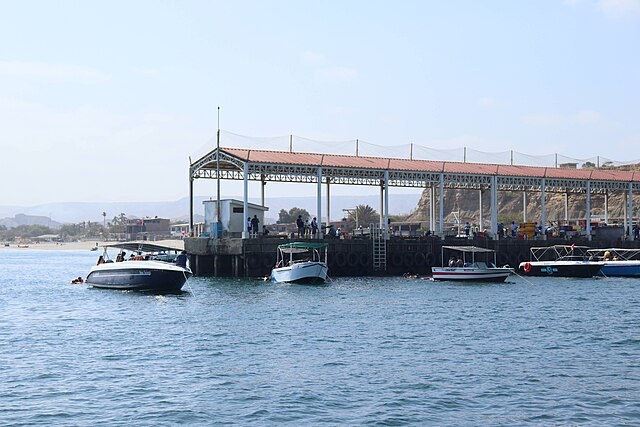
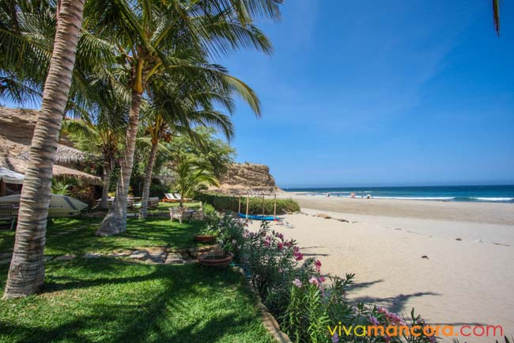
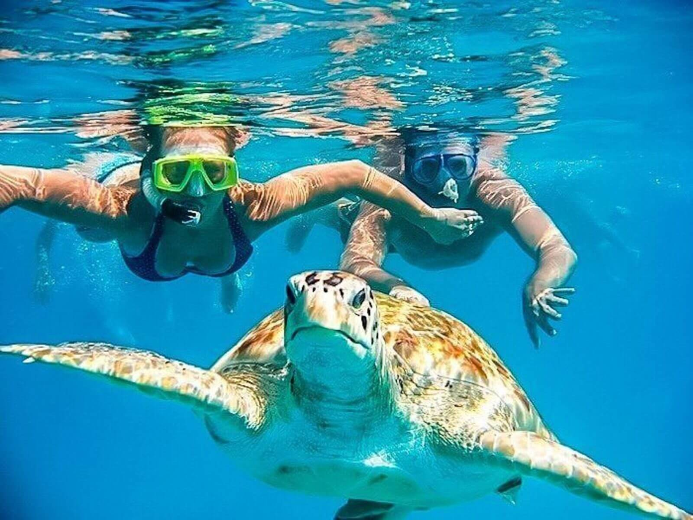
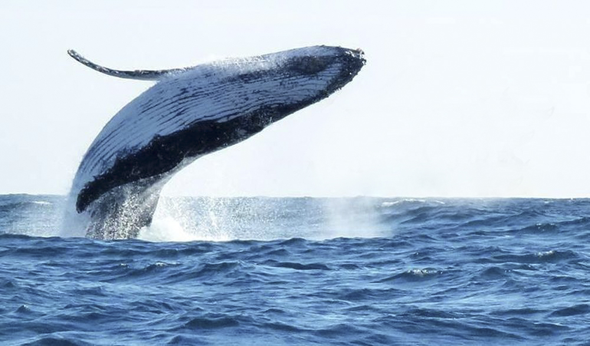

Muelle Pesquero
El Muelle de Los Órganos es un atractivo turístico popular para disfrutar de las vistas al mar y observar la actividad pesquera local.

Playa Punta Veleros
Una de las playas más hermosas de la región, perfecta para el surf, el kitesurf y relajarse bajo el sol.

Nado con Tortugas
Una experiencia única donde los visitantes pueden nadar con tortugas marinas en su hábitat natural.

Avistamiento de Ballenas
De julio a octubre, es posible observar ballenas jorobadas migratorias que pasan por las costas de Los Órganos.